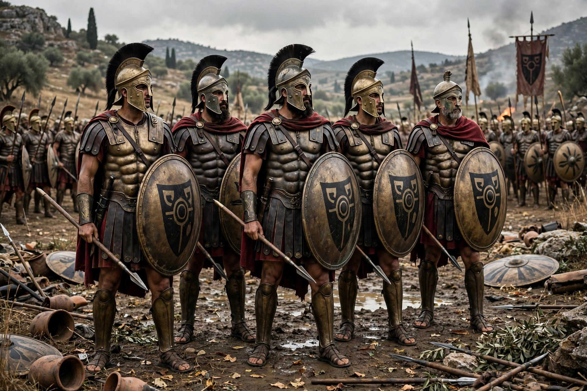

Pelopidas
| Pelopidas | |
| Born | c. 420 BC, Thebes |
|---|---|
| Died | 364 BC, Cynoscephalae |
| Allegiance | Thebes |
| Unit | Sacred Band of Thebes |
| Battles | Leuctra, Tegyra, Cynoscephalae |

Pelopidas (c. 420–364 BC) was a Theban statesman and general credited, with his close friend Epaminondas, with breaking Spartan power and establishing Theban hegemony in Greece. A wealthy aristocrat, he spent his fortune on the city and led the exiles who liberated Thebes from its Spartan garrison in 379 BC.
Career
Pelopidas commanded the Sacred Band, an elite unit of 300 soldiers, at the victory of Tegyra (375 BC) and decisively at Leuctra (371 BC), where Thebes shattered the Spartan army. He then campaigned in Thessaly and Macedon, intervening against Alexander of Pherae and negotiating with Persia. In 364 BC he defeated Alexander at Cynoscephalae but was killed in the battle when he pressed forward in anger at the tyrant.
Sources
His life is told by Plutarch in the Parallel Lives, paired with Marcellus, and by Xenophon and Diodorus.
See also: Epaminondas, Battle of Leuctra.